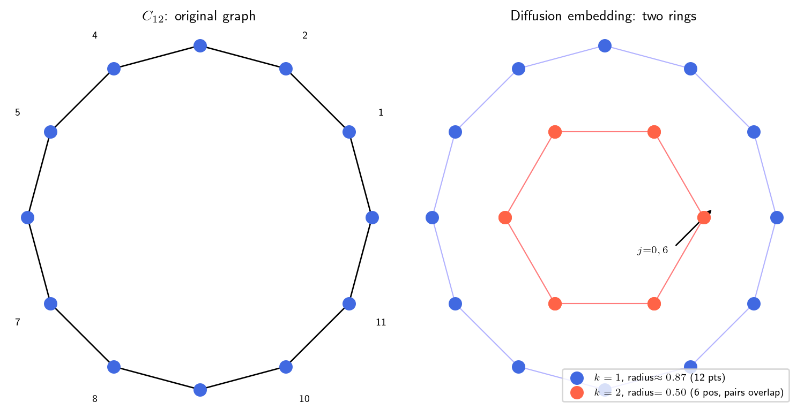

k=2에서 각 노드의 각도 (n=12):
j= 0: 0° = 0°
j= 1: 120° = 120°
j= 2: 240° = 240°
j= 3: 360° = 0°
j= 4: 480° = 120°
j= 5: 600° = 240°
j= 6: 720° = 0° ← j=0과 같은 위치!
j= 7: 840° = 120° ← j=1과 같은 위치!
j= 8: 960° = 240° ← j=2과 같은 위치!
j= 9: 1080° = 0° ← j=3과 같은 위치!
j=10: 1200° = 120° ← j=4과 같은 위치!
j=11: 1320° = 240° ← j=5과 같은 위치!연구 ▷ Diffusion Map ▷ 링 그래프를 임베딩하면 왜 여러 링이 나오나
H. 링 그래프 임베딩하면 왜 링이 여러 개야?
G. 핵심은 딱 한 가지다. 노드 \(j\)를 2D에 찍을 때 쓰는 “각도 공식”이 \(k\)마다 다르다:
\[\text{노드 } j \;\longmapsto\; \Bigl(\cos\!\tfrac{2\pi k j}{n},\;\sin\!\tfrac{2\pi k j}{n}\Bigr).\]
\(k=1\)이면 각도가 \(j\)당 \(360°/n\)씩 증가한다. \(k=2\)이면 각도가 두 배 빠르게 \(2 \times 360°/n\)씩 증가한다. 이 차이가 전부다.
H. “두 배 빠르다”는 게 무슨 결과를 낳아?
G. \(C_{12}\) (\(n=12\))에서 \(k=1\)과 \(k=2\)를 직접 비교해보자.
\(k=1\): \(j=0\)은 \(0°\), \(j=1\)은 \(30°\), \(j=2\)는 \(60°\), … \(j=11\)은 \(330°\). 12개 노드가 \(0°\)에서 \(330°\)까지 고르게 퍼진다 → 원 한 바퀴 → 링 하나.
\(k=2\): \(j=0\)은 \(0°\), \(j=1\)은 \(60°\), \(j=2\)는 \(120°\), … \(j=6\)은 \(360° = 0°\). \(j=6\)이 \(j=0\)과 같은 위치다. \(j=7\)은 \(j=1\)과 같고, \(j=8\)은 \(j=2\)와 같고, … 결국 12개 노드가 6개 위치에 둘씩 겹쳐 앉는다.
H. 겹친다는 건 알겠는데, 그게 왜 “여러 링”이야?
G. 이제 두 결과를 그림으로 보자. 같은 좌표계에 \(k=1\) 임베딩(파랑)과 \(k=2\) 임베딩(빨강)을 겹쳐 그리면:
import numpy as np
import matplotlib.pyplot as plt
plt.rcParams.update({'text.usetex': True, 'font.size': 9})
n = 12
t = 1
j = np.arange(n)
lam1 = np.cos(2*np.pi / n)
lam2 = np.cos(4*np.pi / n)
x1 = lam1**t * np.cos(2*np.pi * j / n)
y1 = lam1**t * np.sin(2*np.pi * j / n)
x2 = lam2**t * np.cos(4*np.pi * j / n)
y2 = lam2**t * np.sin(4*np.pi * j / n)
fig, axes = plt.subplots(1, 2, figsize=(8, 4))
# --- 왼쪽: 원래 그래프 ---
ax = axes[0]
theta = 2*np.pi*j/n
xg, yg = np.cos(theta), np.sin(theta)
for i in range(n):
ax.plot([xg[i], xg[(i+1)%n]], [yg[i], yg[(i+1)%n]], 'k-', lw=1)
ax.scatter(xg, yg, s=70, c='royalblue', zorder=5)
for i in range(n):
ax.annotate(str(i), (xg[i]*1.22, yg[i]*1.22),
ha='center', va='center', fontsize=7)
ax.set_title(r'$C_{12}$: original graph', fontsize=10)
ax.set_aspect('equal')
ax.set_box_aspect(1)
ax.axis('off')
# --- 오른쪽: k=1, k=2 겹쳐서 ---
ax = axes[1]
# k=1 (파랑, 큰 링)
for i in range(n):
ax.plot([x1[i], x1[(i+1)%n]], [y1[i], y1[(i+1)%n]],
'b-', lw=0.8, alpha=0.3)
ax.scatter(x1, y1, c='royalblue', s=70, zorder=5,
label=rf'$k=1$, radius$\approx{lam1:.2f}$ (12 pts)')
# k=2 (빨강, 작은 링 — 6 위치에 둘씩 겹침)
for i in range(n):
ax.plot([x2[i], x2[(i+1)%n]], [y2[i], y2[(i+1)%n]],
'r-', lw=0.8, alpha=0.3)
ax.scatter(x2, y2, c='tomato', s=70, zorder=4,
label=rf'$k=2$, radius$={lam2:.2f}$ (6 pos, pairs overlap)')
# 겹치는 쌍 강조: j=0과 j=6
ax.annotate('', xy=(x2[6]+0.05, y2[6]+0.05), xytext=(x2[6]-0.15, y2[6]-0.15),
arrowprops=dict(arrowstyle='->', color='black', lw=1))
ax.text(x2[6]-0.18, y2[6]-0.18, r'$j{=}0,6$', fontsize=7, ha='right')
ax.legend(loc='lower right', fontsize=7, framealpha=0.8)
ax.set_title(r'Diffusion embedding: two rings', fontsize=10)
ax.set_aspect('equal')
ax.set_box_aspect(1)
ax.axis('off')
plt.tight_layout()
plt.savefig(
'results/figures/260528_유진_DiffusionMap_MultipleRings.qmd/rings_concentric.png',
dpi=150, bbox_inches='tight'
)
plt.show()
파란 링(큰, \(k=1\))과 빨간 링(작은, \(k=2\))이 같은 원점에서 동심원으로 나타난다. 이것이 “여러 링”의 정체다.
\(k=1\)과 \(k=2\)의 반지름이 다른 이유는 eigenvalue \(\lambda_k^t\) 때문이다 — \(\lambda_1 = \cos(30°) \approx 0.87 > \lambda_2 = \cos(60°) = 0.5\). 링마다 반지름이 달라 동심원처럼 보인다.
H. \(k\)가 더 커지면?
G. 같은 원리로 \(k=3\)이면 각도가 세 배 빠르고, \(j\)와 \(j+4\)가 겹쳐 4개 위치만 남는다 (4-gon). \(k=4\)이면 \(j\)와 \(j+3\)이 겹쳐 3개 위치(triangle). 하지만 \(C_{12}\)에서는 \(\lambda_3 = \cos(90°) = 0\)이라 \(k=3\) 링은 반지름이 0 — 보이지 않는다.
H. 한 줄 요약.
G. 노드 \(j\)가 각도 \(2\pi k j/n\)으로 원 위에 찍히는데, \(k\)가 클수록 각도가 빠르게 증가해 일부 노드가 겹치고 반지름 \(\lambda_k^t\)도 달라진다 — \(k\)마다 다른 반지름의 링이 나오는 것, 그게 “여러 링”이다.